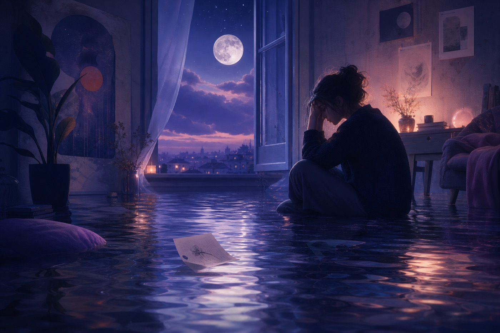

Qué significa soñar con inundación de agua, casa o mar
Soñar con inundación de agua suele hablar de una emoción que se desborda: estrés, cambios rápidos, una casa que ya no se siente segura o una preocupación que entra sin pedir permiso. Si buscas qué significa soñar con una inundación, empieza por tres datos: dónde sube el agua, si es limpia o sucia y si logras escapar, observar o pedir ayuda. Después compara esa escena con cómo te sentías al despertar.
Respuesta rápida
Soñar con inundación indica que algo emocional se desborda. Si la inundación es de agua limpia, puede haber liberación o claridad; si el agua está sucia, confusión o cansancio. Si entra en casa o viene del mar, mira primero seguridad personal, familia y emociones profundas.
Para ir directo al matiz, revisa los tipos de sueños de agua, el estado del agua y las interpretaciones comunes de inundación.
Qué significa soñar con inundación de agua
Si llegaste buscando qué significa soñar con inundación, el punto central es la pérdida de contención. El sueño no habla solo de agua: habla de una emoción, responsabilidad o cambio que empieza a ocupar demasiado espacio.
Inundación en casa
Se relaciona con familia, intimidad o seguridad personal afectada por estrés acumulado.
Inundación de agua de mar
Apunta a emociones profundas, recuerdos o incertidumbre que llegan con fuerza.
Agua limpia
Puede indicar liberación emocional, claridad o una limpieza necesaria.
Agua sucia
Sugiere cansancio, confusión o emociones mezcladas que todavía necesitan orden.
Para separar el símbolo breve de la escena completa, revisa también el símbolo inundación y el símbolo agua.
Cómo leer una casa inundada o agua sucia en sueños
Una casa inundada suele mover el significado hacia lo íntimo: descanso, familia, privacidad o límites personales. Si el agua entra por puertas, ventanas o habitaciones conocidas, pregúntate qué preocupación está atravesando una frontera que antes te protegía.
El agua sucia añade confusión. No solo hay intensidad emocional; también puede haber cansancio, información mezclada, culpa o una conversación pendiente que todavía no se ve con claridad. En cambio, una inundación de agua limpia puede señalar liberación, aunque el volumen del agua siga siendo abrumador.
Para registrar la escena completa, guarda el sueño en el diario de sueños por voz y compáralo después con el diccionario de símbolos.

Variantes frecuentes de soñar con inundaciones de agua
Muchas personas no buscan “agua” en general, sino una escena concreta. Empieza por la variante que más se parece a tu sueño:
- Soñar con inundación: emoción, responsabilidad o cambio que empieza a ocupar demasiado espacio.
- Inundaciones de agua sucia: confusión, cansancio o algo que todavía no se ve con claridad.
- Inundaciones de agua de mar: emociones antiguas, profundas o difíciles de medir.
- Casa inundada: la preocupación entra en tu mundo íntimo: familia, descanso o seguridad.
- El mar se sale e inunda: una emoción grande rompe el límite que antes parecía contenerla.
Preguntas frecuentes
¿Qué significa soñar con una inundación?
Soñar con una inundación suele indicar emociones, estrés o cambios que se sienten difíciles de contener. La lectura cambia según si el agua está limpia, sucia, viene del mar o entra en casa.
¿Qué significa soñar con inundaciones de agua sucia?
El agua sucia en una inundación apunta a confusión, cansancio emocional o una situación que te supera y todavía no puedes ordenar con claridad.
¿Qué significa soñar con inundaciones de agua de mar?
El agua de mar añade profundidad emocional e incertidumbre. Puede mostrar que emociones antiguas o intensas están entrando en tu vida consciente.
¿Qué significa soñar con una casa inundada?
La casa representa tu mundo íntimo. Una casa inundada sugiere que preocupaciones, conflictos o emociones intensas están invadiendo tu espacio de seguridad.
¿Qué significa soñar con inundación y escapar?
Escapar de una inundación suele mostrar que tu mente está buscando salida, límites o apoyo. No borra la presión emocional, pero indica movimiento y recuperación de control.
¿Qué significa soñar con agua limpia que inunda?
Una inundación de agua limpia puede hablar de liberación emocional, claridad o una limpieza necesaria, aunque la cantidad de agua indique que el proceso se siente grande.
¿Qué significa soñar que el mar se sale e inunda?
Cuando el mar se sale e inunda, el sueño suele mostrar una emoción profunda que rompe un límite. Mira qué zona queda cubierta: casa, calle o cuerpo cambian el matiz.

Sueños de agua: el simbolismo universal del agua
En la interpretación de sueños, el agua es quizás el símbolo más universal de las emociones. Así como el agua puede ser tranquila o turbulenta, profunda o superficial, clara o turbia, también pueden serlo nuestros estados emocionales. Este simbolismo aparece en prácticamente todas las culturas y tradiciones psicológicas.
Más allá de las emociones, el agua representa el inconsciente - las vastas profundidades a menudo ocultas de nuestra psique que yacen debajo de la conciencia superficial. Cuando sueñas con sumergirte en agua profunda, puedes estar explorando las profundidades de tu inconsciente. Cuando el agua sube sin invitación, las emociones o el material inconsciente pueden estar exigiendo tu atención.
"El agua es el símbolo más común del inconsciente. El lago en el valle es el inconsciente yaciendo, por así decirlo, debajo de la conciencia." - Carl Jung
Tipos de sueños de agua y su significado
El tipo específico de agua en tu sueño tiene un significado distinto:
El océano representa el vasto inconsciente, emociones colectivas o posibilidades infinitas de la vida. Su tamaño puede sentirse tanto inspirador como abrumador, reflejando cómo puedes sentirte ante la profundidad y el misterio de la vida.
Sueños de ahogarse
Ahogarse típicamente simboliza sentirse abrumado por las emociones o circunstancias. Puedes sentir que tienes "la cabeza bajo el agua" o que no puedes hacer frente a lo que la vida te está enviando.
Sueños de inundación
Las inundaciones representan emociones desbordantes, trastornos importantes o situaciones que se sienten fuera de control. También pueden simbolizar purificación emocional o la liberación de sentimientos reprimidos.
Sueños de nadar
Nadar sugiere que estás navegando tu vida emocional. Nadar fácilmente indica competencia emocional; luchar por nadar sugiere dificultad para manejar sentimientos o situaciones.
Sueños de lago o estanque
Los cuerpos de agua contenidos a menudo representan emociones contenidas o tu estado emocional interno. Un lago tranquilo sugiere paz; un estanque turbio puede indicar sentimientos confusos o poco claros.
Sueños de río
Los ríos simbolizan el flujo de la vida, el tiempo y el viaje emocional. Dejarse llevar por la corriente sugiere aceptación; nadar contra ella puede indicar resistencia al cambio o a la dirección de la vida.
El estado del agua importa
Más allá del tipo de agua, su estado proporciona información crucial sobre tu estado emocional:
Agua clara
El agua cristalina típicamente indica claridad emocional, pureza de sentimientos o pensamiento claro. Puedes haber ganado perspectiva sobre tus emociones o sentirte emocionalmente transparente y honesto.
Agua turbia o sucia
El agua poco clara sugiere confusión emocional, sentimientos reprimidos o situaciones que no son lo que parecen. Puedes estar confundido sobre tus sentimientos o enfrentando territorio emocional turbio.
Agua tranquila
El agua quieta y pacífica refleja paz interior, tranquilidad emocional y equilibrio. Puedes estar en un buen lugar emocional, o tu sueño te está mostrando lo que es posible cuando encuentras la calma.
Agua turbulenta
Mares agitados, rápidos o agua agitada indican turbulencia emocional, conflicto interno o circunstancias de vida que se sienten caóticas. Puedes estar pasando por momentos emocionalmente difíciles.
Interpretaciones comunes
1. Desbordamiento emocional
La interpretación más común de los sueños de agua - especialmente ahogarse, inundaciones o tsunamis - es sentirse emocionalmente abrumado. La vida puede estar enviándote más de lo que sientes capaz de manejar.
2. Procesos inconscientes
Los sueños de agua a menudo señalan que algo de tu inconsciente está buscando atención. Esto puede ser recuerdos reprimidos, sentimientos no reconocidos o conocimiento intuitivo que intenta salir a la superficie.
3. Limpieza emocional
Los sueños de agua positivos - bañarse, nadar en agua clara o la lluvia - pueden representar limpieza emocional, sanación o lavarse la negatividad. Puedes estar liberando viejo equipaje emocional.
4. Transiciones de vida
Cruzar agua, ríos o ser llevado por corrientes a menudo simboliza transiciones en la vida. Puedes estar pasando de una fase emocional a otra o enfrentando un cambio de vida importante.
Perspectivas psicológicas
Visión junguiana
Carl Jung veía el agua como el símbolo principal del inconsciente. Creía que sumergirse en el agua en los sueños representaba explorar el inconsciente, mientras que el agua que sube podría indicar contenido inconsciente exigiendo atención de la mente consciente.
Interpretación freudiana
Freud asociaba el agua con el nacimiento, el útero y la sexualidad. Entrar en el agua podría simbolizar el regreso al útero o memorias del nacimiento, mientras que el agua en los sueños podría representar impulsos y deseos primitivos.
Psicología moderna
La investigación contemporánea de los sueños conecta los sueños de agua con el procesamiento emocional y la regulación del estrés. Tu cerebro puede usar imágenes de agua para procesar experiencias emocionales, con el estado del agua reflejando tus estados emocionales actuales.
"Los sueños de agua son la forma en que la psique nos muestra nuestro paisaje emocional. Presta atención a cómo se comporta el agua - te está diciendo cómo fluyen tus emociones." - Dr. Kelly Bulkeley, Investigador de sueños
Trabajando con sueños de agua
Aquí te mostramos cómo obtener perspectivas de tus sueños de agua:
1. Nota el estado del agua
Inmediatamente al despertar, registra el estado del agua - tranquila, turbulenta, clara, turbia, caliente, fria, subiendo, bajando. Esto refleja tu estado emocional.
2. Considera tus acciones
¿Estabas nadando, ahogándote, flotando, buceando? Tu relación con el agua revela cómo estás manejando tus emociones. Nadar activamente sugiere compromiso; ahogarse sugiere estar abrumado.
3. Identifica las emociones
¿Cómo te sentías en el sueño? ¿Miedo, paz, emoción, pánico? El tono emocional a menudo importa más que el contenido literal.
4. Busca paralelos con la vida
Pregúntate: ¿Dónde en mi vida despierta me siento así? ¿Abrumado? ¿Con la cabeza bajo el agua? ¿Emocionalmente confundido? ¿Dejándome llevar? El sueño puede estar destacando áreas específicas de la vida.
5. Aborda los sueños de agua recurrentes
Si los sueños de agua se repiten, especialmente los perturbadores, tu psique está destacando algo que necesita atención. Considera qué emociones puedes estar reprimiendo o qué situaciones se sienten abrumadoras.
Símbolos relacionados
Explora los símbolos mencionados en este artículo:
Preguntas Frecuentes
¿Qué simboliza el agua en los sueños?
El agua en los sueños representa universalmente las emociones y el inconsciente. El estado del agua - tranquila, turbulenta, clara o turbia - refleja tu estado emocional. El agua profunda a menudo simboliza emociones profundas o el inconsciente, mientras que la superficie representa la conciencia.
¿Qué significa soñar con ahogarse?
Los sueños de ahogarse típicamente simbolizan sentirse abrumado por las emociones o circunstancias de la vida. Puedes sentir que tienes "la cabeza bajo el agua" con responsabilidades, relaciones o sentimientos. También puede indicar emociones reprimidas que amenazan con salir a la superficie.
¿Qué significan los sueños de inundación?
Los sueños de inundación a menudo representan emociones desbordantes, cambios importantes en la vida, o la sensación de perder el control. Pueden simbolizar liberación emocional, purificación, o situaciones en tu vida que se sienten incontenibles.
¿Qué significa soñar con una casa inundada?
La casa en los sueños representa tu identidad y seguridad personal. Una casa inundada simboliza que emociones intensas están invadiendo tu espacio más íntimo: puedes sentir que el estrés, la ansiedad o conflictos no resueltos amenazan tu estabilidad emocional y tu sensación de refugio.
¿Qué significa soñar que el mar se sale e inunda?
Soñar que el mar se sale e inunda suele indicar que una emoción profunda rompe un límite que parecía contenerla. Si el agua llega a tu casa, el tema toca seguridad e intimidad; si cubre una calle, puede hablar de dirección, cambio o presión externa.
Fuentes / Lectura adicional
Articulos Relacionados
Para seguir leyendo
Recursos relacionados sobre el mismo tema
Significado de Sueños Recurrentes: Entender sus Mensajes
¿Por qué sigues teniendo el mismo sueño? Descubre lo que tu subconsciente está tratando de decirte.
InterpretaciónSoñar que se caen los dientes: significado e interpretación
¿Por qué sueñas que pierdes los dientes? Descubre las 7 interpretaciones más comunes.
InterpretaciónSueños de caer: por qué sueñas que caes al vacío
¿Por qué sueñas con caer al vacío? Descubre el significado psicológico.
Última actualización: